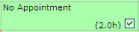

Scheduling a Task
You can schedule tasks with a few clicks using the scheduling screen.

The scheduling screen shows the time slots down the left hand side. These slots can be set up to suit your needs, and can be -coded to highlight slots that would breach the SLA for the issue (see Issue SLAs).
The other columns show which are available for each slot, and the number of hours available:
- Green background - the is available.
- Orange background - the has some time available during the slot.
- Red background - the is booked or unavailable. The scheduling screen takes account of bank holidays, as well as individual holidays and other appointments in the individual's .
There is also a Scheduling {Enquiry}, which is useful for reviewing forthcoming bookings. This does not show the SLA , and does not allow you to schedule tasks directly (though you can click the links to update and re-schedule tasks).
To schedule a task:
- Open the scheduling screen for the task.
You can get to the scheduling screen in different ways:
- Find an appropriate time slot.
You can use the  and
and  buttons to see earlier or later days.
buttons to see earlier or later days.
- the box.

- If the duration of the task is longer than a single time slot, you only need to the first time slot.
- If the following time slots on that day are available, automatically schedules the task into those slots.
- If the duration of the task exceeds the time remaining on that day, asks whether to book the extra time to the following day, or keep the booking to the same day.
- If the task requires more than one , the boxes for each of the you want to assign to the task (they must be for the same time slot). This creates a joint task. (You can also add when updating a task, using the Joint Task With selectors.)
- Optionally, add a scheduling note (for example, to explain why you have rescheduled an appointment). This note will appear as an event in the call history.
- Click
 .
.
To view an 's contact details:
- Move the mouse pointer over the 's name (at the top of the column); the tooltip shows their phone and fax numbers, and email address.
To view an 's :
- Click the 's name (at the top of the column).
To view details of an appointment:
Scheduling Configuration
Scheduling Screen
Set the parameter SCHUSE to Y to enable use of the scheduling screen. Set the parameter SCHDAYS to the number of days to show on the scheduling screen.
You can configure the descriptions of appointments (that is, the description of the current appointment at the top of the scheduling screen, and the links to other appointments). Use the parameter SCHTFLD to specify the information you want to show.
Use {Kco Company} Holidays to set up holidays or other days on which all will be unavailable.
on the scheduling screen are sales staff; in Sales Staff, the Scheduling Operative box. The Staff Code on the sales staff record must correspond to a User ID (that is, there must be a user record with the same code; however, the does not need to log in to ).
Time Slots
To set up the time slots, use Timeslots. To -code the time slots based on the service level agreement for the task, see Issue SLAs.

 button next to the Date & Time of Appointment field.
button next to the Date & Time of Appointment field.